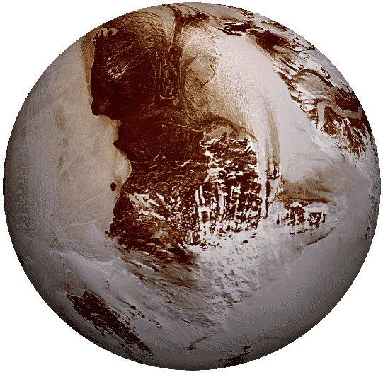

Plutón

Plutón, ubicado a 5900 millones de kilómetros del Sol, es el último planeta conocido por ahora del Sistema Solar. Es probablemente una bola de hielo y roca. Posee una luna gemela llamada Caronte, con la cual forma un sistema doble, es decir, cada astro orbita al otro.
La órbita de Plutón es muy excéntrica y, durante 20 de los 249 años que tarda en recorrerla, se encuentra más cerca del Sol que Neptuno. Es también la más inclinada con respecto al plano en el que orbitan los demás planetas del Sistema Solar, siendo su inclinación de 17º. Por eso no hay peligro alguno de que se encuentre con Neptuno.
Plutón posee una atmósfera extremadamente tenue, formada por nitrógeno, metano y monóxido de carbono, que se congela y colapsa sobre su superficie a medida que el planeta se aleja del Sol. Es esta evaporación y posterior congelamiento lo que causó las variaciones en el albedo del planeta,
Masa: 1,25 × 1022 kg
Diámetro: 2370 km
Densidad: 1750 kg/m³
Temperatura mínima/máxima: -240°/-218°
Velocidad de órbita: 4,7 km/s